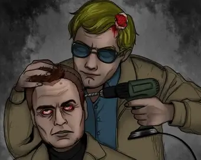

Jeffrey Dahmer

"
Jeffrey Lionel Dahmer (21 de mayo de 1960 – 28 de noviembre de 1994), también conocido como el Caníbal de Milwaukee o el Monstruo de Milwaukee, fue un asesino en serie y delincuente sexual estadounidense que cometió el asesinato y desmembramiento de diecisiete
hombres y adolescentes entre 1978 y 1991. Muchos de sus asesinatos posteriores involucraron la necrofilia, el canibalismo y la preservación permanente de partes del cuerpo, generalmente todo o parte del esqueleto. Aunque se le diagnosticó
un trastorno límite de la personalidad, un trastorno esquizotípico de la personalidad y un trastorno psicótico, se encontró que Dahmer estaba legalmente cuerdo en su juicio. Fue condenado por quince de los dieciséis asesinatos que había cometido
en Wisconsin y fue sentenciado a quince cadenas perpetuas el 17 de febrero de 1992.Más tarde, Dahmer fue sentenciado a una decimosexta cadena perpetua por un homicidio adicional cometido en Ohio en 1978. El 28 de noviembre de 1994, Dahmer
fue asesinado a golpes por Christopher Scarver, un compañero de prisión en la Institución Correccional de Columbia en Portage, Wisconsin.
Infancia
"
Dahmer nació el 21 de mayo de 1960 en Milwaukee, Wisconsin,el primero de dos hijos del matrimonio de Joyce Annette (nacida Flint; 7 de febrero de 1936 - 27 de noviembre de 2000), una instructora de máquinas de teletipo, y de Lionel Herbert Dahmer (nacido
el 29 de julio de 1936), un estudiante de química de la Universidad Marquette y más tarde químico investigador. Lionel Dahmer es de ascendencia alemana y galesa, y Joyce Dahmer era de ascendencia noruega e irlandesa. Algunas fuentes informan
que Dahmer fue privado de atención cuando era un bebé. Otras fuentes, sin embargo, sugieren que Dahmer fue en general mimado por ambos padres cuando era un bebé y un niño pequeño, aunque su madre era conocida por ser tensa, ávida de atención
y compasión, y discutidora con su marido y sus vecinos. Cuando Dahmer entró en el primer curso, los estudios universitarios de Lionel le mantenían lejos de casa la mayor parte del tiempo; cuando estaba en casa, su mujer, hipocondríaca y con
depresión, exigía atención constante y pasaba cada vez más tiempo en la cama. Además, se sabe que en una ocasión intentó suicidarse con meprobamato. En consecuencia, ninguno de los dos padres dedicaba mucho tiempo a su hijo, quien más tarde
recordaría que, desde muy joven, se sentía «inseguro de la solidez de la familia», recordando la extrema tensión y las numerosas discusiones entre sus padres durante sus primeros años. Dahmer había sido un «niño enérgico y alegre», pero se
volvió notablemente apagado después de una doble operación de hernia poco antes de su cuarto cumpleaños. En la escuela primaria, Dahmer era considerado tranquilo y tímido; una profesora recordó más tarde que detectó en Dahmer signos tempranos
de abandono debido a la ausencia de su padre y a las enfermedades de su madre, cuyos síntomas aumentaron cuando esta se quedó embarazada de su segundo hijo. Sin embargo, en la escuela primaria, Dahmer tenía un pequeño número de amigos. En
octubre de 1966, la familia se mudó a Doylestown, Ohio. Cuando Joyce dio a luz en diciembre, Jeffrey pudo elegir el nombre de su hermano pequeño, por lo que le puso el de David. Ese mismo año, Lionel se licenció y empezó a trabajar como químico
analítico en la cercana Akron. Desde una edad temprana, Dahmer manifestó su interés por los animales muertos, fascinación que pudo haber comenzado cuando, a los cuatro años, vio a su padre sacar huesos de animales de debajo de la casa familiar.
Según Lionel, a Dahmer le emocionaba el sonido que hacían los huesos, y empezó a preocuparse por estos. De vez en cuando buscaba más huesos debajo y alrededor de la casa de la familia, y exploraba los cuerpos de los animales vivos para descubrir
dónde se encontraban sus huesos. En 1968, la familia se trasladó a un domicilio en el municipio de Bath, en el condado de Summit (Ohio), el tercero en dos años, y el sexto de los Dahmer desde que se casaron. La casa se encontraba en un terreno
de un acre y medio de bosque, con una pequeña cabaña a poca distancia, donde Dahmer comenzó a coleccionar insectos grandes, como libélulas y polillas, y esqueletos de animales pequeños, como ardillas y tamias. Algunos de estos restos se conservaron
en frascos de formaldehído y se guardaron en la cabaña. Dos años más tarde, durante una cena en la que la familia se encontraba cenando pollo, Dahmer le preguntó a Lionel qué pasaría si los huesos de este se pusieran en lejía. Lionel, complacido
por lo que creía que era la curiosidad científica de su hijo, le demostró cómo blanquear y conservar de forma segura los huesos de los animales. Dahmer incorporó estas técnicas de conservación a su colección de huesos, y también empezó a recoger
animales muertos —incluso atropellados— que diseccionaba y enterraba junto a la cabaña, y colocaba ocasionalmente los cráneos sobre cruces improvisadas. Según un amigo, Dahmer le explicó que tenía curiosidad por saber cómo los animales se
«encastraban». En una ocasión, en 1975, Dahmer decapitó el cadáver de un perro antes de clavar el cuerpo en un árbol y empalar el cráneo en un palo en el bosque detrás de su casa, para más tarde, «como broma», invitar a un amigo a ver la exposición
mientras alegaba que había descubierto los restos por casualidad. El mismo año en que Lionel enseñó a su hijo a conservar huesos de animales, Joyce empezó a aumentar su consumo diario de meprobamato, laxantes y píldoras para dormir, lo que
minimizó aún más su contacto tangible con su marido y sus hijos.
Asesinato de Steven Hicks
"
Dahmer cometió su primer asesinato en 1978, tres semanas después de su graduación. El 18 de junio, Dahmer recogió a un autoestopista de casi 19 años llamado Steven Mark Hicks. Dahmer atrajo al joven a su casa con el pretexto de beber. Hicks, quien había
hecho autostop con el objetivo de ir a un concierto de rock en Chippewa Lake Park, aceptó acompañar a Dahmer a su casa con la promesa de tomar «unas cervezas» con este, quien tenía la casa para él solo. Según Dahmer, la visión de Hicks con
el pecho desnudo de pie al lado de la carretera despertó sus sentimientos sexuales, aunque cuando Hicks empezó a hablar de chicas, sabía que cualquier insinuación sexual que hiciera sería rechazada. Tras varias horas de hablar, beber y escuchar
música, Hicks «quería irse y yo no quería que se fuera», por lo que lo golpeó con una mancuerna de 10 libras (4,5 kg). Más tarde declaró que golpeó a Hicks dos veces por detrás mientras este estaba sentando en una silla. Cuando Hicks cayó
inconsciente, Dahmer lo estranguló hasta la muerte con la barra de la mancuerna, luego despojó la ropa del cuerpo de Hicks antes de explorar su pecho con sus manos, para luego masturbarse mientras estaba sobre el cadáver. Al día siguiente,
Dahmer diseccionó el cuerpo de Hicks en su sótano, para más tarde enterrar los restos en una tumba poco profunda en su patio trasero.Varias semanas después, desenterró los restos y separó la carne de los huesos, para disolverla en ácido y
tirar posteriormente la solución por el retrete. Respecto a los huesos, los trituró con un mazo y los esparció por el bosque que había detrás de su casa.
Universidad y servicio militar
"
Seis semanas después del asesinato de Hicks, el padre de Dahmer y su prometida volvieron a su casa, donde descubrieron que Jeffrey estaba viviendo solo. Ese agosto, Dahmer se matriculó en la Universidad Estatal de Ohio (OSU), con la esperanza de especializarse
en negocios. El único período de Dahmer en la OSU fue completamente improductivo, en gran parte debido a su persistente abuso del alcohol durante la mayor parte de su estancia. Recibió notas de suspenso en introducción a la antropología, civilizaciones
clásicas y ciencias administrativas, siendo prácticas de rifle la única asignatura en la que tuvo éxito, en la que obtuvo una calificación de B-. Su promedio general fue de 0,45/4,0.En una ocasión, Lionel visitó por sorpresa a su hijo, sólo
para encontrar su habitación llena de botellas de licor vacías. A pesar de que su padre había pagado por adelantado el segundo trimestre, Dahmer abandonó la OSU después de sólo tres meses.En enero de 1979,a instancias de su padre, Dahmer se
alistó en el Ejército de los Estados Unidos.Realizó el entrenamiento básico en el fuerte McClellan en Anniston, Alabama, antes de formarse como especialista médico en el fuerte Sam Houston en San Antonio, Texas, donde ocasionalmente fue reprendido
por intoxicación. En una ocasión, un caso de insubordinación hizo que todo su pelotón fuera castigado, lo que le valió a Dahmer una severa paliza por parte de sus compañeros de reclutamiento. El 13 de julio de 1979, Dahmer fue desplegado en
Baumholder, Alemania Occidental, donde sirvió como médico de combate en el 2º Batallón, 68º Regimiento Blindado, 8ª División de Infantería.Según los informes publicados, en el primer año de servicio de Dahmer, fue un soldado «medio o ligeramente
superior a la media».Debido al abuso de alcohol de Dahmer, su rendimiento se deterioró y, en marzo de 1981, se le consideró inadecuado para el servicio militar y posteriormente fue dado de baja del Ejército. Recibió una baja honorable, ya
que sus superiores no creían que los problemas que Dahmer tenía en el ejército fueran aplicables a la vida civil.El 24 de marzo de 1981, Dahmer fue enviado a Fort Jackson, Carolina del Sur, para ser interrogado y se le proporcionó un billete
de avión para viajar a cualquier parte del país. Más tarde, Dahmer dijo a la policía que sentía que no podía volver a casa para enfrentarse a su padre, por lo que optó por viajar a Miami Beach, Florida, tanto porque estaba «cansado del frío»,como
en un intento de vivir por sus propios medios. En Florida, Dahmer encontró un trabajo en una delicatessen y alquiló una habitación en un motel cercano, sin embargo, gastó la mayor parte de su salario en alcohol, lo que provocó que pronto fuera
desalojado por falta de pago. Al principio, pasaba las tardes en la playa mientras seguía trabajando en la tienda de bocadillos, hasta que llamó por teléfono a su padre y le pidió volver a Ohio en septiembre de ese mismo año.
Regreso a Ohio y traslado a West Allis, Wisconsin
"
Tras su regreso a Ohio, Dahmer vivió inicialmente con su padre y su madrastra e insistió en que le delegaran numerosas tareas para ocupar su tiempo mientras buscaba trabajo. Siguió bebiendo en exceso y, dos semanas después de su regreso, fue arrestado
por embriaguez y alteración del orden público, y en consecuencia, se le impuso una multa de sesenta dólares y una condena de diez días de cárcel en suspenso. El padre de Dahmer trató sin éxito de desintoxicar a su hijo del alcohol. En diciembre
de 1981, él y la madrastra de Dahmer lo enviaron a vivir a West Allis, Wisconsin, con su abuela, el único miembro de su familia a quien le mostraba algún tipo de afecto. Esperaban que su influencia, además del cambio de ubicación, pudiera
persuadir a Dahmer para que dejara de beber, encontrara un trabajo y viviera responsablemente. Al principio, la convivencia de Dahmer con su abuela era armoniosa: la acompañaba a la iglesia, realizaba de buen grado las tareas domésticas, buscaba
activamente trabajo y acataba la mayoría de las normas de la casa, aunque seguía bebiendo y fumando. A principios de 1982, Dahmer encontró empleo como flebotomista en el Centro de Plasma Sanguíneo de Milwaukee, donde mantuvo este trabajo durante
un total de diez meses antes de ser despedido. Dahmer permaneció en el paro durante más de dos años, durante los cuales vivió con el dinero que le daba su abuela. Poco antes de perder su trabajo, Dahmer fue arrestado por exposición indecente.
El 8 de agosto de 1982, en el Parque de la Feria Estatal de Wisconsin, se le observó exponerse «en el lado sur del Coliseo en el que estaban presentes veiticinco personas, incluidas mujeres y niños». Por este incidente, fue condenado y multado
con cincuenta dólares más las costas judiciales. En enero de 1985, Dahmer fue contratado como mezclador en la fábrica de chocolate Ambrosia de Milwaukee, donde trabajaba de 11 de la noche a 7 de la mañana, seis noches a la semana, con las
de los sábados libres. Poco después de que Dahmer encontrara este trabajo, se produjo un incidente en el que otro hombre le hizo una proposición mientras estaba sentado leyendo en la Biblioteca Pública de West Allis. El desconocido le lanzó
a Dahmer una nota en la que le ofrecía realizarle una felación. Aunque Dahmer no respondió a esta proposición, el incidente despertó en su mente las fantasías de control y dominio que había desarrollado cuando era adolescente, y comenzó a
familiarizarse con los bares, los baños y las librerías gay de Milwaukee. También se sabe que robó un maniquí masculino de una tienda, que utilizó brevemente para su estimulación sexual, hasta que su abuela descubrió el objeto guardado en
un armario y le exigió que se deshiciera de él.A finales de 1985, Dahmer había empezado a frecuentar regularmente las casas de baños, que más tarde describió como «lugares de relax», pero durante sus encuentros sexuales se frustró al ver que
sus parejas se movían durante el acto. Tras su detención, declaró: «Me entrené para ver a las personas como objetos de placer en lugar de [como] personas».Por ello, a partir de junio de 1986, administraba somníferos a sus parejas, que les
daba mediante licor con sedantes, para luego esperar a que se durmieran para realizar diversos actos sexuales. Para mantener un suministro adecuado de esta medicación, Dahmer informó a los médicos de que trabajaba por las noches y requería
las pastillas para ajustarse a ese horario.Después de unos doce casos de este tipo, la administración de los baños revocó la afiliación de Dahmer, quien, en consecuencia, empezó a utilizar las habitaciones de los hoteles para continuar con
esta práctica.Poco después de que se le revocara la membresía de la casa de baños, Dahmer leyó un informe en un periódico sobre el próximo funeral de un hombre de 18 años, por lo que concibió la idea de robar el cadáver recién enterrado y
llevárselo a casa.Según Dahmer, intentó desenterrar el ataúd del suelo, pero encontró el suelo demasiado duro y abandonó el plan.El 8 de septiembre de 1986, Dahmer fue arrestado por un cargo de conducta lasciva y lujuriosa por masturbarse
en presencia de dos niños de 12 años mientras se encontraba cerca del río Kinnickinnic. Al principio afirmó que sólo había estado orinando, sin saber que había testigos, pero pronto admitió el delito.n Se le cambió el cargo por conducta desordenada
y, el 10 de marzo de 1987, se le sentenció a un año de libertad condicional, con instrucciones adicionales de someterse a terapia.
Hotel Ambassador
"
El 20 de noviembre de 1987, Dahmer, quien en ese momento residía con su abuela en West Allis, se encontró con un hombre de 25 años de Ontonagon, Míchigan, Steven Tuomi, en un bar y lo convenció de que fuera con él al Hotel Ambassador de Milwaukee, donde
Dahmer había alquilado una habitación para la noche. Según este último, no tenía intención de asesinar a Tuomi, sino que pretendía simplemente drogarlo y acostarse a su lado mientras exploraba su cuerpo. A la mañana siguiente, sin embargo,
Dahmer se despertó y encontró a Tuomi tumbado bajo él en la cama, con el pecho «aplastado» y con moratones «negros y azules». Además, le salía sangre de la comisura de la boca, y los puños y un antebrazo de Dahmer estaban muy amoratados. Este
posteriormente declaró que no recordaba haber matado a Tuomi, y más tarde informó a los investigadores de que «no podía creer que esto hubiera ocurrido». Para deshacerse del cadáver de Tuomi, Dahmer compró una gran maleta en la que transportó
el cuerpo a la residencia de su abuela. Allí, una semana después, separó la cabeza, los brazos y las piernas del torso, luego fileteó los huesos del cuerpo antes de cortar la carne en trozos lo suficientemente pequeños como para manipularlos.
A continuación, Dahmer colocó la carne en bolsas de plástico para la basura, envolvió los huesos dentro de una sábana y los hizo astillas con un mazo. Todo el proceso de desmembramiento le llevó a Dahmer aproximadamente dos horas, para posteriormente
deshacerse de todos sus restos, excepto la cabeza, en la basura.Durante las dos semanas siguientes al asesinato de Tuomi, Dahmer conservó la cabeza de la víctima envuelta en una manta, para luego hervirla en una mezcla de Soilex, un detergente
industrial a base de basicidad, y lejía en un esfuerzo por conservar el cráneo, que luego utilizó como estímulo para la masturbación. Finalmente, el cráneo se volvió demasiado frágil por este proceso de blanqueo, por lo que Dahmer lo pulverizó
y se deshizo de él.
Incidentes intermedios
"
Tras el asesinato de Tuomi, Dahmer comenzó a buscar activamente víctimas, la mayoría de las cuales encontraba en bares gay o cerca de ellos, y a las que solía atraer a la casa de su abuela, para posteriormente drogarlas con triazolam o temazepam antes
o poco después de mantener relaciones sexuales con ellas. Una vez que dejaba a su víctima inconsciente con somníferos, la mataba por estrangulamiento. Dos meses después del asesinato de Tuomi, Dahmer se encontró con un prostituto nativo americano
de 14 años llamado James Doxtator. Dahmer atrajo al joven a su casa ofreciéndole cincuenta dólares por posar desnudo para unas fotos. En su residencia de West Allis, la pareja mantuvo relaciones sexuales antes de que Dahmer drogara a Doxtator
y lo estrangulara en el suelo del sótano, para posteriormente dejarlo ahí durante una semana antes de desmembrarlo de forma muy parecida a como lo hizo con Tuomi. Para deshacerse de los restos del cadáver, los trasladó a un contenedor de basura,
exceptuando el cráneo, que hirvió y limpió en lejía antes de que observara que se había vuelto demasiado frágil con este proceso, por lo que lo terminó pulverizando dos semanas después. El 24 de marzo de 1988, Dahmer conoció a un hombre bisexual
de 22 años llamado Richard Guerrero fuera de un bar gay llamado The Phoenix. Dahmer atrajo al joven a la residencia de su abuela, aunque el incentivo en esta ocasión fueron cincuenta dólares para que simplemente pasara el resto de la noche
con él.A continuación, drogó a Guerrero con somníferos y lo estranguló con una correa de cuero, para posteriormente practicar sexo oral con el cadáver. Dahmer desmembró el cuerpo a las 24 horas de asesinarlo, tiró de nuevo los restos a la
basura y conservó el cráneo antes de pulverizarlo varios meses después.El 23 de abril, Dahmer atrajo a otro joven a su casa; sin embargo, después de darle a la víctima un café drogado, la pareja escuchó a la abuela de Dahmer llamar: «¿Eres
tú, Jeff?».Aunque su nieto respondió de una manera que hizo creer a su abuela que estaba solo, esta observó que realmente no lo estaba. Por ello, Dahmer optó por no matar a esta víctima en particular, sino que esperó a que quedara inconsciente
para llevarla al Hospital General del Condado. En septiembre de 1988, la abuela de Dahmer le pidió que se mudara, en gran medida, por su forma de beber, su costumbre de llevar a hombres jóvenes a su casa a altas horas de la noche y los malos
olores que ocasionalmente emanaban tanto del sótano como del garaje. Dahmer encontró un apartamento de una habitación en el 808 de la calle 24 Norte,se trasladó a su nueva residencia el 25 de septiembre. Dos días después, fue detenido por
drogar y acariciar sexualmente a un niño de 13 años al que había atraído a su casa con el pretexto de posar desnudo para fotografías.El padre de Dahmer contrató a un abogado llamado Gerald Boyle para defender a su hijo. A petición de Boyle,
Dahmer se sometió a una serie de evaluaciones psicológicas antes de sus próximas audiencias judiciales, que revelaron que albergaba profundos sentimientos de alienación. Una segunda evaluación, dos meses después, reveló que Dahmer era un individuo
impulsivo, desconfiado de los demás y consternado por su falta de logros en la vida. Su agente de libertad condicional también hizo referencia a un diagnóstico de 1987 según el cual Dahmer sufría un trastorno esquizoide de la personalidad
para presentarlo al tribunal.El 30 de enero de 1989, Dahmer se declaró culpable de los cargos de agresión sexual en segundo grado y de seducir a un niño con fines inmorales, aunque la sentencia fue suspendida hasta mayo.El 20 de marzo,Dahmer
se ausentó diez días del trabajo en Semana, durante los cuales se trasladó a la casa de su abuela. Dos meses después de su condena y dos meses antes de su sentencia por la agresión sexual, Dahmer asesinó a su quinta víctima, un aspirante a
modelo mestizo de 24 años llamado Anthony Sears, a quien conoció en un bar gay el 25 de marzo de 1989. Según Dahmer, en esta ocasión en particular, no buscaba cometer un crimen; sin embargo, poco antes de la hora de cierre de esa noche, Sears
«simplemente empezó a hablar conmigo». Dahmer atrajo a este último a la casa de su abuela, donde ambos practicaron sexo oral antes de drogarlo y estrangularlo. A la mañana siguiente, Dahmer colocó el cadáver en la bañera de su abuela, donde
lo decapitó antes de intentar desollarlo. Despojó la carne del cuerpo y pulverizó los huesos, que tiró a la basura. Según Dahmer, Sears le resultaba «excepcionalmente atractivo», y fue la primera víctima de la que conservó permanentemente
alguna parte del cuerpo: conservó su cabeza y sus genitales en acetona y los guardó en una caja de madera, que luego colocó en su casillero de trabajo.n Cuando se mudó a una nueva dirección al año siguiente, se llevó los restos allí. El 23
de mayo de 1989, Dahmer fue condenado a cinco años de libertad condicional y a uno de reclusión en un centro penitenciario, con permiso para trabajar a fin de que pudiera conservar su empleo. También se le exigió que se registrara como delincuente
sexual.Dos meses antes de su salida programada del campo de trabajo, Dahmer salió de este régimen debido al inicio de su libertad condicional de cinco años.Al ser liberado, se trasladó temporalmente a la casa de su abuela en West Allis.En
mayo de 1990, se mudó a los apartamentos Oxford, situados en la calle 25 Norte de Milwaukee. Aunque estaba situado en una zona de alta criminalidad, el apartamento estaba cerca de su lugar de trabajo, estaba amueblado y, por trescientos dólares
al mes, incluidas todas las facturas, excepto la de electricidad, era económico.
Víctimas
"
Jeffrey Dahmer mató a diecisiete jóvenes entre 1978 y 1991. De estas víctimas, doce fueron asesinadas en su apartamento de North 25th Street. Otras tres víctimas fueron asesinadas y desmembradas en la residencia de su abuela en West Allis, su primera
víctima fue asesinada en la casa de sus padres en Ohio y la segunda en el Hotel Ambassador de Milwaukee. Un total de catorce de las víctimas de Dahmer pertenecían a diversas minorías étnicas, y nueve de ellas eran negras.Dahmer insistía en
que la raza de sus víctimas era algo incidental para él y que lo que le llamaba la atención era la forma del cuerpo de una víctima potencial. Estas afirmaciones han sido respaldadas por un estudio de especialistas forenses independientes sobre
la selección de víctimas de Dahmer, cuyo análisis antropológico reveló que sus víctimas compartían una «similitud morfológica» y sugería que Dahmer se sentía «psicológicamente atraído por un determinado tipo de cuerpo antropométrico». La mayoría
de las víctimas de Dahmer fueron asesinadas por estrangulamiento después de haber sido drogadas con sedantes, aunque su primera víctima fue asesinada por una combinación de apaleamiento y estrangulamiento y su segunda víctima fue golpeada
hasta la muerte, con otra víctima asesinada en 1990, Ernest Miller, que murió por una combinación de shock y pérdida de sangre debido al corte de su arteria carótida.A cuatro de las víctimas de Dahmer asesinadas en 1991 se les practicaron
agujeros en el cráneo a través de los cuales Dahmer inyectó ácido clorhídrico o, más tarde, agua hirviendo, en los lóbulos frontales en un intento de inducir un estado permanente, sumiso e irresistible. Esto resultó fatal, aunque en cada ocasión
no era la intención de Dahmer.
Arresto y condena
"
El 22 de julio de 1991, Tracy Edwards, su última víctima, consiguió escapar esposado. La policía lo vio y esta vez decidieron investigar. Fueron al apartamento del hombre que lo había esposado y al revisar la habitación descubrieron varias fotografías
de cadáveres. Dahmer intentó huir, pero fue detenido.[cita requerida] En su casa encontraron una cabeza humana en el refrigerador, dos bolsas en el congelador que contenían un corazón humano y unos genitales masculinos. En la recámara se encontraron
cinco cráneos y diversos objetos como cuchillos, sierras y martillos, así como fotos detallando procesos de desmembración de cuerpos humanos. En otro cajón se encontró un esqueleto completo con los huesos limpiados con cloro, un cuero cabelludo
disecado y un tambor de 260 litros lleno de ácido con tres torsos y otras partes humanas. También se encontraron rastros de sangre en las paredes. Días después, vecinos de Dahmer dispararon a las puertas de su casa ante el horror que causaron
sus crímenes. Los psiquiatras que lo atendieron le dijeron que estaba enfermo, por lo que se declaró culpable con atenuante de enajenación mental, para ser condenado a una cárcel especial para enfermos mentales, pero la atenuante fue finalmente
rechazado. En principio se había declarado inocente, pero cambió su declaración por la gran cantidad de pruebas encontradas en su contra. El jurado entonces lo declaró mentalmente sano y por consecuencia fue finalmente sentenciado a 15 cadenas
perpetuas consecutivas. Fue enviado al Columbia Correctional Institute en Portage, Wisconsin, donde fue entrevistado por el perito en perfiles criminales del FBI Robert K. Ressler. Este famoso experto coincidió en que, para defensa de la sociedad,
el condenado tenía que permanecer encerrado durante el resto de sus días. Sin embargo, destacó que debía ser internado en un hospital psiquiátrico y no en una cárcel común, puesto que era un enfermo mental, aunque a veces pareciera estar en
su sano juicio y racionalizara su conducta. El criminal admitió haber practicado el canibalismo y devorado los bíceps de una de sus víctimas. Señaló que se masturbaba ante los trozos humanos y las calaveras de aquellos que consideraba hermosos
y a quienes no quería perder. Contó a los policías que tenía la sensación de poder permanecer al lado de ellos si los mataba y conservaba sus cráneos. Declaró también que las tres cabezas halladas en su nevera y en su congelador, con la carne
intacta, pertenecían a sus tres últimas víctimas.
ùììùì∏ùì¨ùìæùì∂ùìÆùì∑ùìΩùì™ùìµ